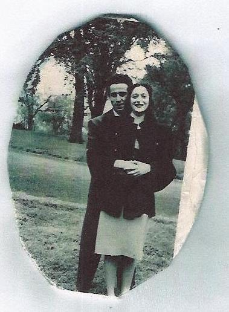

ELI “TED” HANOVER · FAMILY & GENERATIONS
A life remembered together.
The headlines tell one part of Eli Hanover’s story. At home, it was the ordinary moments—family gatherings, shared meals, celebrations, and time together—that gave his life its meaning.
A living family archive. Identifications, dates, and recollections are recorded as they are verified.


Beyond the ring was a family.
Eli’s story moves through East Baltimore, the Merchant Marine, and the city’s boxing halls. The family archive follows another, equally important thread: the relationships, traditions, and memories of the people closest to him.
Photographs help preserve those moments, but they do not tell the whole story on their own. We pair the images with careful captions, recollections, and documents as information becomes available.
Read about the Merchant Marine and family years ↗FAMILY HISTORY · COLLECTIONS
Explore the memories
Every collection is part of one interconnected story. Historical material is shared selectively, with family privacy and attribution in mind.
Family Photographs
Portraits, gatherings, milestones, and family moments—only images of family members or family occasions.
Browse photographs ↗02Family History
Family connections, generations, and archival records, with uncertain details clearly identified.
Explore history ↗03In Loving Memory
Remembering the family through tributes, memorial records, and the people who carry their stories.
Read tributes ↗02 / MOMENTS PRESERVED
From the family album
Only approved photographs categorized as family appear below. City scenes, boxing posters, advertisements, and historical documents belong in other collections.
Loading approved family photographs…
03 / KEEP THE STORY ALIVE
Every photograph has a story behind it.
Do you recognize someone, recall an occasion, or have a family memory worth preserving? Contributions can help clarify names, dates, and the details that might otherwise be lost.
Please avoid submitting sensitive information about living relatives without their permission. Submitted material is reviewed before publication.